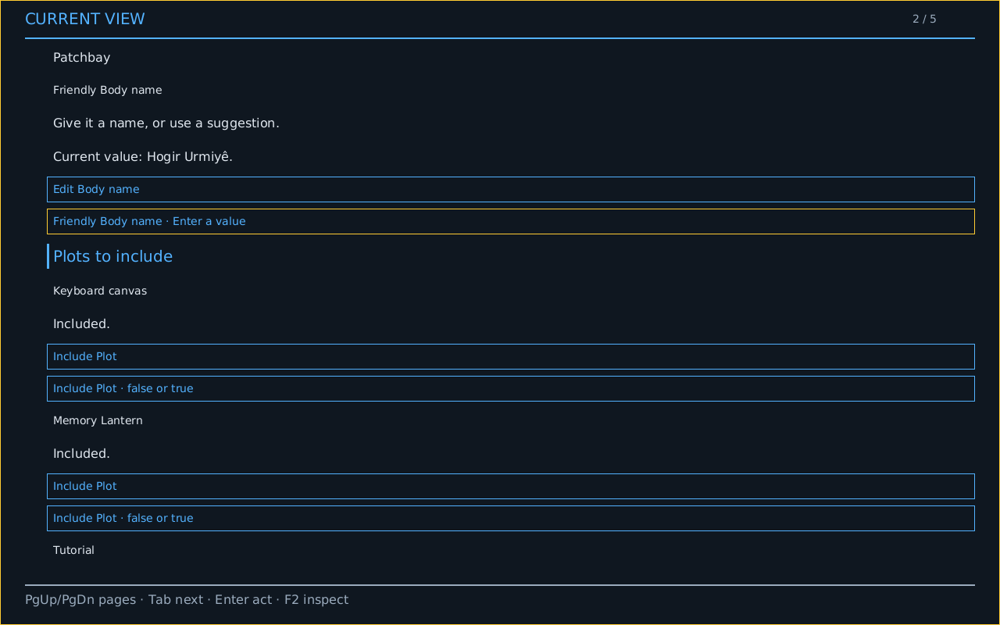
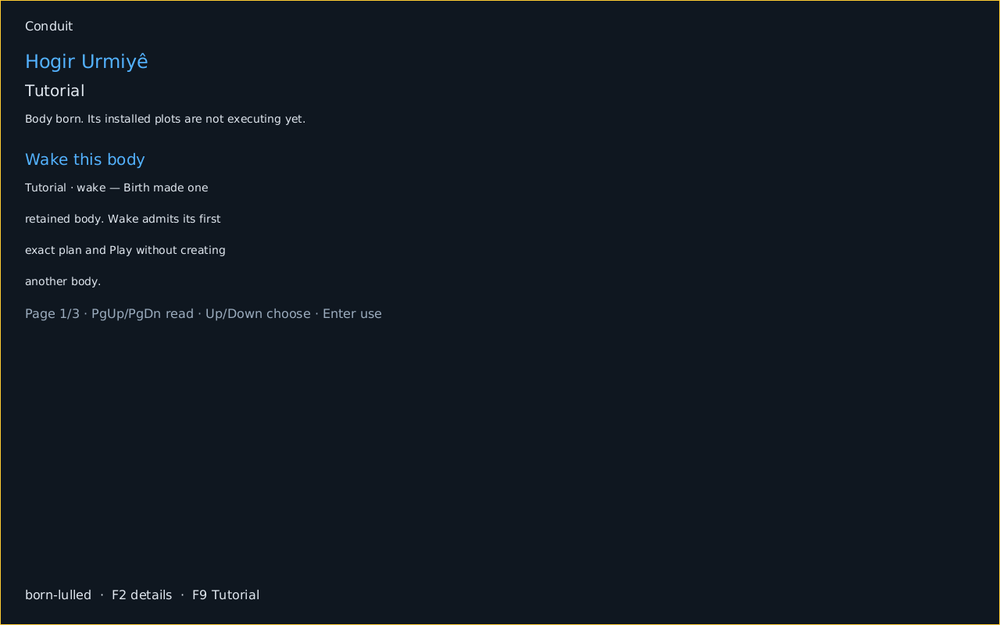
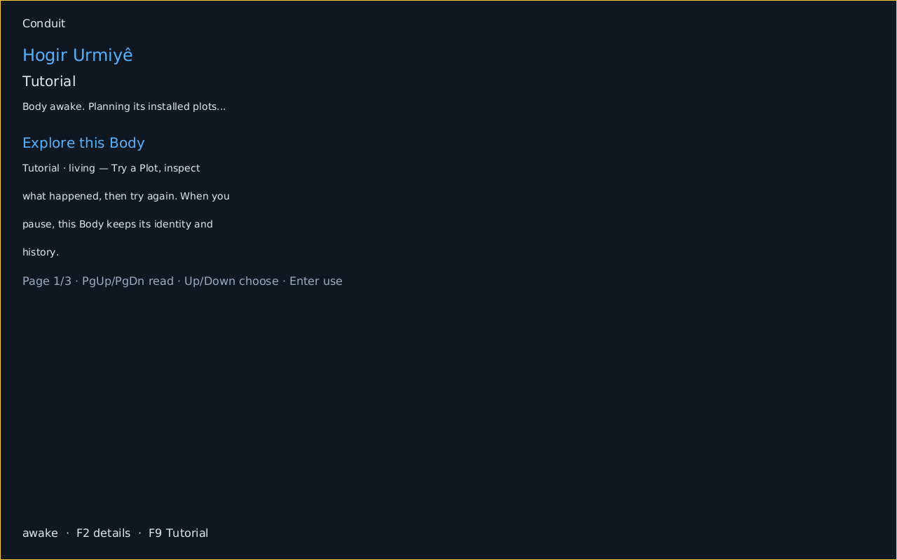
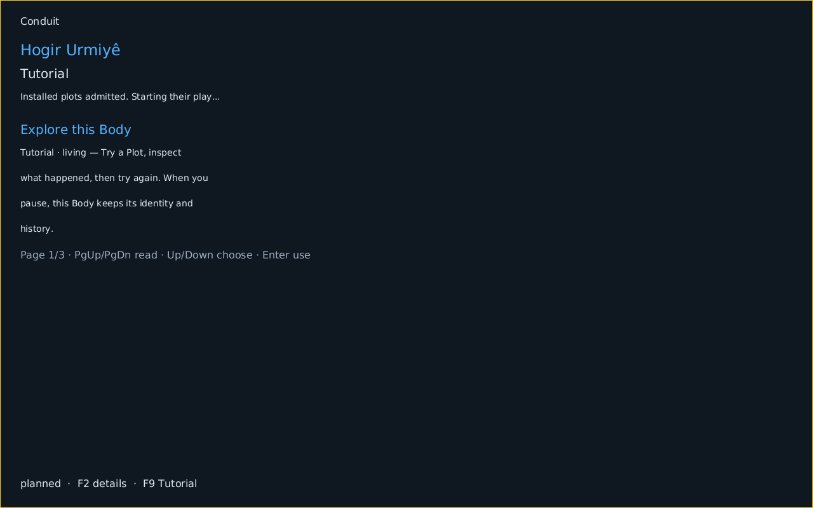
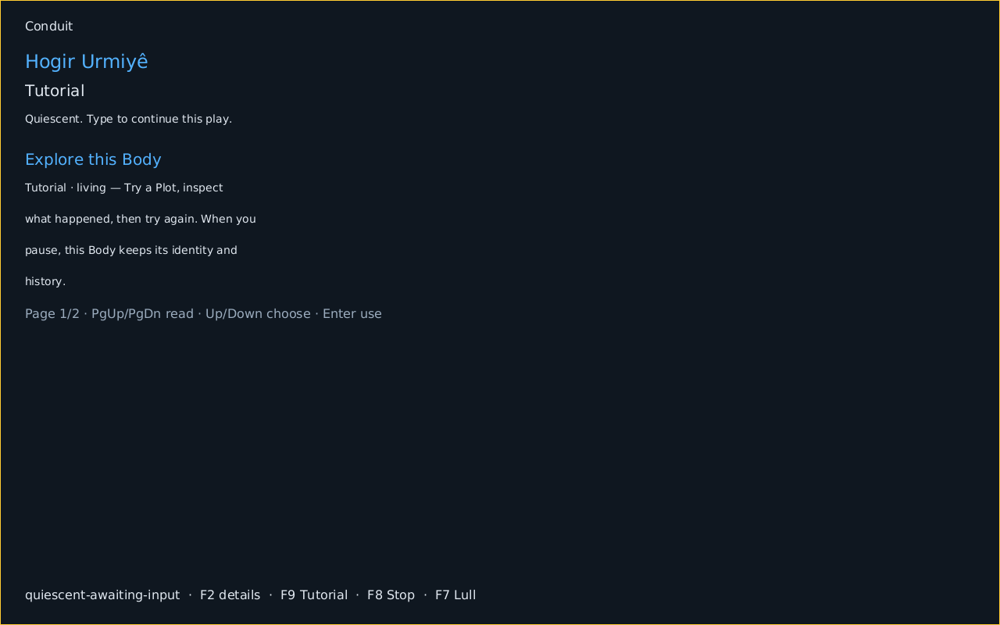
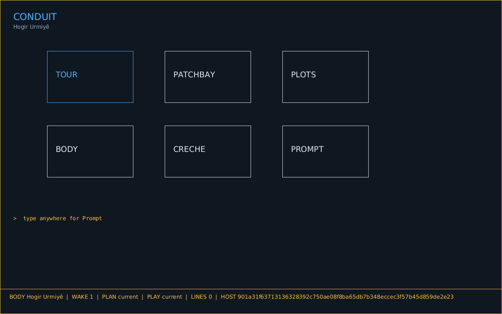
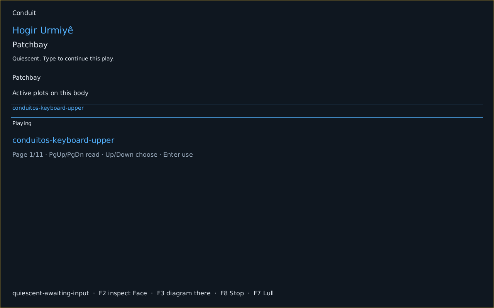
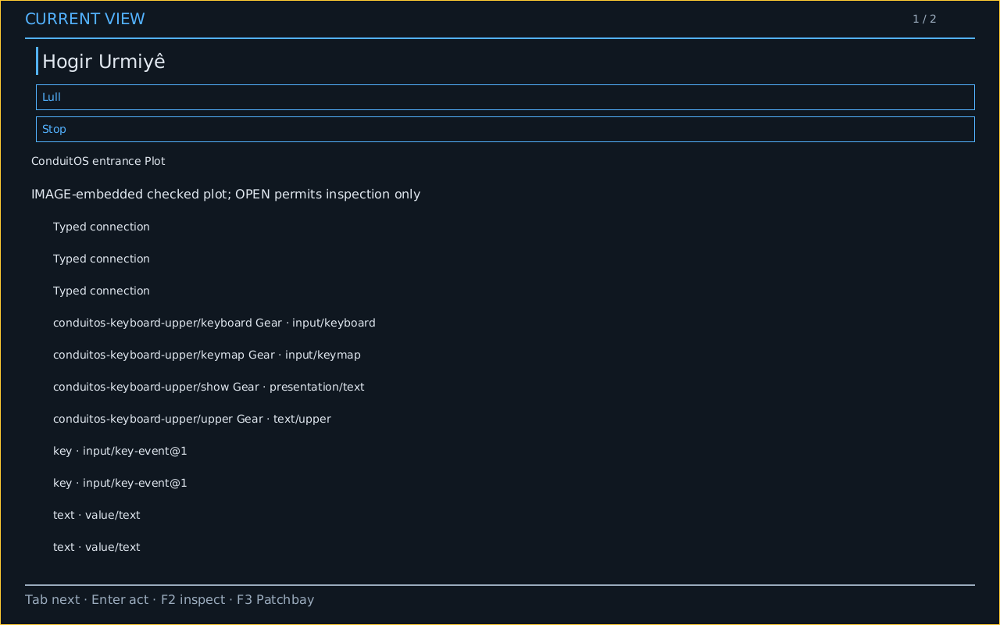
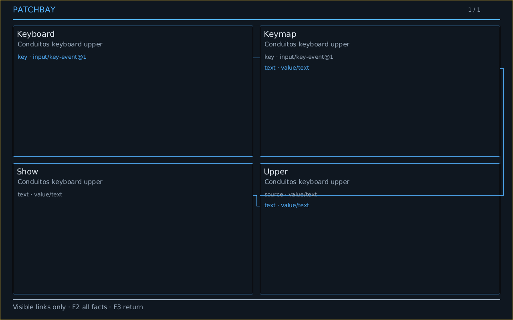
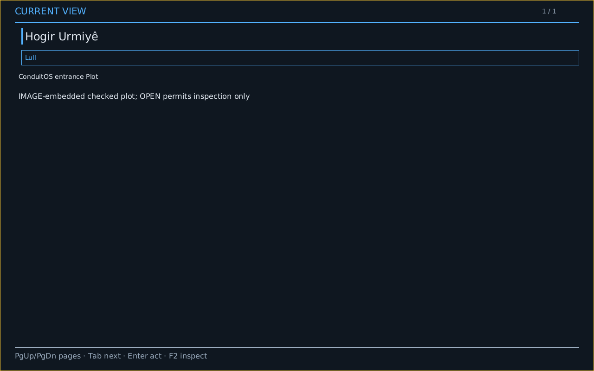

A Body, its Patchbay, and its Face
These images follow keyboard actions in one real ConduitOS x86 guest. The QMP harness captured the display after each guest checkpoint. This is freestanding emulator evidence from a development image; physical and human enactment remain separate.

1. Arrive
Crèche offers a name and available Plots. No Body exists yet.
2. Birth
The user activates Birth. The Body is retained and resting; Birth does not silently start a Play.
3. Wake
Wake admits the current work. Its Plan and Play remain distinct actions.
4. Plan
The Host selects exact backs for the Body's Plots, including the gears, ports, and cords visible later in Patchbay.
5. Play
The same Body starts its admitted Play and awaits input.
6. Go Home
The user opens Home without losing the Body.
7. Open Patchbay
The resident Patchbay is selected from Home.
8. Inspect the Face
F2 presents the current semantic Face through the native Mask.
9. View the diagram
F3 draws the current planned graph from Face subjects and relationships, rather than loading a pre-generated SVG.
10. Stop
The user requests Stop through the Face. The Body stays identified and can be woken again.